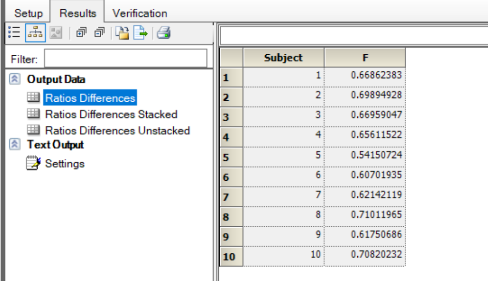

3 Introduction to WinNonlin (122-D)
3.1 Project setup
- Create Project
Phenoex Projects
contains all the data and calculations
multiple projects can be open at the same time
common data file to import: excel, csv
older version can always be opened by newer version
newer version projects can not be opened by older ones
Create a project
Click to history tab to see the project history
Click to properties tab, where most of the work is done
- Create Worksheets
- Right click on Data, select New, select Worksheet
- Add columns, give column name, assign data type
- assign units: select time from list of columns, click Unit Builder button, specify h to the time, click Add button,click OK
- for dose, specify mass prefex, click Add
- Type numbers on the worksheet to add values to the cells
- Import Files
- file type: xls, xlsx, csv, SAS
- typical data file contains header and unit row.
- Select the Import button, select the file
- on the File import wizard, select appropriate options
- Preview area helps to see the changes
- If units are in the column header, select “has units in the header”
Excels with multiple worksheet:
- click the arrow to move on the Wizard to the next worksheet
- Save Projects
- Click the save icon on the toolbar
- File name can be completely different from the Project name
- No auto-save options
- sharing project file will also share the embedded data files
- Close project by right clicking the project name
- After opening a saved project folder, expand the plus sign to see the contents.
- Set Project Preferences
- Select the Edit menu -> preferences -> Projects
- Check Autosave on execution
- update the save locations and hit apply before clicking on OK.
3.2 Create and Modify Worksheets
- Sort Rows
- data can be sorted by subject, dose level,
- sort button on every worksheet
- Use the “sort worksheet” window to apply sort options
- Move Columns
- Select a column from the column list
- Click the up or down arrow to move
- Rename Columns
- Click the column name, type F2 or double click on it to edit the name
- Apply Units
- Select column
- Click the Unit Builder
- Click Clear Units
- Add units
- Convert Units
- convert amount column from microgram to miligram
- click the Amount column
- type mg in the New unit box,click OK
- To convert ng/mL to nmole/mL, add nmol and then click the slash button, specify the volume unit, enter molecular weight, click OK.
- Better way: use the Data Wizard to convert the units.
3.3 Plot Data
- Create Simple Plot
- Data: Conc, Time, dose level: 16 mg, 10 subjects
- right click the worksheet
- Select send to -> plotting -> xy plot
- XY object is created with the linked data source
- On the mapping window, orange column headers are required mappings
- map, x -> Time, y -> conc, Group -> subject
- click execute
- Options pan - Axes - Y - select log button
- Options pan - Graphs - rename by typing F2
- Graph name and legend names are the same
- Create Lattice Plot
- Data: Conc, Time, Administration, dose level 4 mg for IV, 8 mg for PO, 10 subjects
- Create a XY plot object same as above
- map x - Time, y - conc, group - subject, lattice column - administration
- Execute and get two plots
- Options - range - ‘auto scale best’ settings scales individual plots are independent
- Use Second Y Axis
- Data: plasma conc, urine conc, time, 10 subjects
- Creat XY plot object same as above
- map x - Time, y - plasma conc, y2 - urine conc, lattice condition, page (sort) - Subject
- plots are on a single page for each subject
- Options - select plasma_conc vs Time, type F2, change the name to Plasma, do the same for Urine
- Execute
- Compute Descriptive Statistics
- Needed to create a plot with mean and error bars
- right click on data sheet, send to - computation tools - Discriptive statistics
- map summary - conc, sort - Time
- Execute
- Options pannel - click Clear All - click basic statistics, check Mean and SD
- Use Error Bars
- Discriptive Satistics object - Output data - right click on Statistics
- send to plotting - XY plot
- map x - Time, y - Mean, Error bars, lower - SD, Error bars, upper - SD
- Execute
- set Y axis to log scale
- Create Overlay Plot
duplicate the error bars plot from previous section
Options pan - Plot - Graphs tab - click Add button
Select the new second input from the setup tab
Link the source data by clicking source button,
map x - Time, y - conc, group - subject
Execute
Options pan - select Conc vs Time plot
Select Quick Styles
Uncheck Group by lines, uncheck Gourp by colors,
Select Apprance tab
Specify color to Silver
Uncheck Markers visible
Now all the individual lines are silver color
Select Mean vs Time graph
Select Appearance, specify line colors to red, Marker border color - red, line weight 3
Under the Mean vs Time graph, select the Error bars
Select Appearance, color - red
Options pan - select Y axis - select Axis label and update
Options pan - select Legend - uncheck Visible
- Create Box Plot
- 20 subjects, AR: accumulation ratio (how much accumulated under repeated ss), dose level, 2 mg and 4 mg
- Is AR increases with increasing dose level?
- right click data, send to - plotting - box plot
- map y - AR, group - dose level
- Execute
- Create Plot with Categorical X Axis
- Data: Severity (Mild, Moderate), dose level (1, 2, 4, 8, 16, 32 mg), frequency (numerical, i.e., 0, 0.2, 0.6)
- right click the data sheet, send to plotting - X-categorical XY plot
- map x - severity, y - frequency, group - dose level
- Options pan, select X axis, select Order tab, change order if needed
- Options pan - Frequency vs Severity graph - check line visible - now points are connected by a line
- Set Plot Preferences
- Options pan - Plot - Layout

- Edit menu bar, preferences, plotting details
- Changing prefernences affect all new plots
3.4 Introduction to NCA
3.4.1 About NCA
Non-compartmental analysis or NCA is a method for quantifying drug exposure
NCA determines a large number of pharmacokinetic descriptors or PK parameters for a drug
They are not really parameters as you would have in a model
NCA does not use any kind of model other than assuming that the elimination can be described by first order kinetics
because there is no model at the heart of the method we cannot really use it for predictions
An example plot of concentration over time following an extravascular dose NCA will give us two different measures of drug exposure:
the peak exposure to the drug concentration occurring after dosing
The overall exposure is measured by computing the area under the curve or AUC
an extra vascular dose starts with a concentration of zero, the concentration rises rapidly reaches Cmax and then decreases
with extra vascular dosing there is an absorption process that leads to a maximum concentration followed by elimination
IV bolus dosing: drug is directly injected all at once into a vein; the mixing and systemic circulation is very fast and by the time the first sample is taken after dosing the mixing is assumed to be complete. The concentration starts high and then decreases as the drug is eliminated.
IV infusion: the concentration starts at zero and then rises if the infusion is continued for long enough the concentration approaches a plateau at steady state when the infusion stops the concentration then falls in the same manner as in ivy bolus dosing
plotting on a log scale is useful because it usually shows linear elimination in each case regardless of the dosing root we could fit the linear portion with a straight line to predict what will happen to concentration after we’ve collected the last sample concentration on the log axis

It is useful to have both linear and log plots. Linear plots are useful for examining the peak concentration and log plots are useful for the low concentrations
In addition to an elimination phase many drugs also show a distribution phase in such cases there may be two distinctive straight line sections on the plot. Although sometimes the two phases blend into a general curvature in the plots we see here the distribution phase is apparent for all three dosing routs but it is most pronounced for the IV bolus dosing. For extravascular dosing the distribution phase may be obscured by the drug absorption.
The AUC can be determined no matter how complex the relationship between concentration and time.
Summary:
NCA is the primary method of assessing drug exposure.
Cmax is a measure of peak exposure
AUC is a measure of the overall exposure to the drug
different dosing route leads to a curve with the distinctive shape that plotting on a log concentration scale usually shows linear elimination
many drugs show a distribution phase as well as an elimination phase
3.4.2 Observe Parameters
- From the plot of concentration versus time, we can see that the maximum concentration is reached at about 1 hour, we call that time Tmax and the concentration at the peak is Cmax
- Tmax and Cmax are listed in the output of NCA in Phoenix
- At some point after dosing we will have our last observed concentration this may be because we have stopped collecting samples or the concentration may have dropped below the quantification limit for the analysis and therefore we were unable to get more values The point is at a time of t last and has a concentration of Tlast These observeed parameters are affected by the sampling schedule we can improve our chances by sampling richly around the expected time of c max if we have more points we have a better chance of capturing a concentration that is near the true maximum
Summarize
- Observed parameters are TMax Cmax TLast and Clast. We call these observed parameters because they are found directly in the observations
- the observed parameters are dependent on sampling times
- sample richly around the expected time of Cmax so you can have a better chance of capturing something close to the true maximum
3.4.3 Half-Life
time it takes for the concentration to decrease by 50%.
a long half-life leads to a shallower slope and a short half-life leads to a steeper slope
some drugs exhibit two phases a distribution phase and an elimination phase each of these will have a half-life associated with it The shorter the half-life of the distribution phase the steeper the initial decline will be although we usually concentrate on the half-life of the elimination phase the effective half-life of the drug may very well depend on the half-lives of both of these processes
It takes five to seven half lives to eliminate the drug.
3.4.4 Area Under the Curve (AUC)
How to calculate AUC?
assume that the concentration follows a straight line between points
one triangle and several trapizoid
AUC is calculated from concentration-time data
Trapezoids are used to estimate AUC between two data points
AUC is the sum of the areas of all the trapezoids plus one triangle
3.4.5 Extrapolation to Infinity
after the Tlast there are still large quantity of drug in the plasma
How can we extrapolate to infinity?
We need a way to calculate the AUC Tlast - infinity.
Slope of the elimination is the key, apparent terminal phase, magnitide of the slope is \(\lambda_Z\)
\[ AUC _{tlast - \infty} = \frac{C_{last}}{\lambda_z} \]
\[ AUC _{0 - \infty} = AUC_{last} + \frac{C_{last}}{\lambda_z} \]
- extrapolatd area should be below 20%
Important NCA parameters:
Independent of least-squares fit: such as Cmax, Tmax, AUClast,
Dependent on the least-squares fit: \(\lambda_Z\), AUC~ 0-inf~, %Extrapolation, terminal half-life, volume, clearance
3.4.6 Volume of Distribution
\[ C = \frac{Dose}{V} \]
volume of distribution relates to the dose and concentration
Does not corresponds to anything physiological
Example, 100 ug dose to IV bolus and 2 ug/L concentration, volume is 50L.
typical human plasma volume is 5 L, why V is sometimes very large?
Drugs that are strongly bound to protein has very high V
3.4.7 Clearance
- Clearance Quantifies how quickly drug is removed from the body
\[ Rate ofelimination = Cl * C(t) \]
In most cases Cl is constant. If changes with concentration, suspect non linear kinetics (saturation). for this reason, different dose level is adminstered.
Clearance includes both Metabolism and Excretion
- it is difficult to obtain all the ratios, so the overall ratio is called Bioavailability.
Bioavailability
\[ F = \frac{AUC_{oral}/Dose_{oral}}{AUC_{IV}/Dose_{IV}} \]
Intravenous: NCA parameters are V and Cl (F = 1)
Extravascular: NCA parameters are V/F and Cl/F (F<1)
Elimination = Metabolism (liver) + Excretion (Kidney)
Cltotal = Clhepatic + Clrenal + Clother
Clrenal = Ae (amount of drug excreted in the urine)/ AUCplasma
Calculation of Clearance from NCA:
You get the following from NCA
3.4.8 Linear vs Log
3.5 Run NCA on Plasma Data
3.5.1 Run NCA using best fit
Drug: Gravitix, 10 subjects, a single ascending dose (SAD) study, 6 dose level (1, 2, 4, 8, 16, 32 mg), PO adminsitration
From the plot each subject grouped by dose level, we see that as the dose increases so do the concentrations in plasma
we expect that the drug exposure should increase proportionally to the dose
after we run NCA we will assess dose proportionality by examining PK parameters returned by NCA
Two worksheets: Observations and Dosing. Data on Observatino worksheet: Conc, Time, Subject, Doselevel, Administration, Amount.
Performing NCA:
Right click on observation worksheet
select sent to, non-compartmental analysis, NCA
Select plasma, which is default setting
specify the dose type the default is extravascular
Required mappings: Time to time, the conc to concentration, subject to sort, dose level to sort
select dosing. two options: a worksheet with the dozing information or an internal worksheet
select source
click okay
Map: Time to time, amount to dose, subject and dose level to sort
specify the calculation method linear up logdown
click execute
double click the final parameters pivoted worksheet to open in its own window
Viewing plots:
select observed y and predicted y versus x
for subject one dose level 1: 5 points were used in the \(\lambda_Z\) calculation, from 8 hours to the last observation at 36 hours
The best fit method automatically determines the optimal least squares regression using at least three points
r-squared is the correlation coefficient of the regression
r squared adjusted is based on the r squared adjusted for the number of points in the regression
The number points with the best value of r squared adjusted is used.
the half-life based on the value of \(\lambda_Z\) is also reported in this case the half life is about 22 hours
Page 2: this plot is also for subject one but now the dose level is 2 mg
in this case the best fit method used three points in the calculation
even though it is the same subject but the half-life based on lambda z is much shorter than for the first dose at only about 15 hours
Page 3: this plot is for subject one does level 4
again 3 points were used in the calculation
the half-life is about 28 hours
Page 4: this is for subject one those level 8
this time five points were used in the half-life is 15 hours
Page 5: now we are up to those level 16 for and half-life is 21 hours
Page 6: this plot is now at the highest to those level 32 mg
the half life is lower this time It’s 18
we have seen it’s quite a variability between different dose levels but is there a systematic trend?
let’s create a box plot to see if there is appears to be a trend
right click on final parameters pivoted
send to plotting: box plot
map HL_lambda_z to y
now we want to look for a trend across the dose group map to dose level
click execute button
The plot shows us the distribution of half-life across the different dose groups
from the plots we can see that although there is a good deal of variation in the dose levels, there does not appear to be a systemic trend and all the boxes overlopped with each other
Box plot of AUCs
let’s make the duplicate of this plot:
right click box plot
select copy
right click on the workflow
select paste
select the duplicated plot let’s change the mapping for the y map AUCINF_D_obs
click execute
because the data are dose normalized AUC values extrapolated to infinity we would expect these values to be the same for all dose groups and they do appear to be very consistent
most values falling between 0.04 and 0.05
this does suggest that the overall drug exposure is proportional to the dose
although this is not a statistical test for the dose proportionality, it does give us a quick visual impression
Box plot of AUClast_D
Let’s make duplicate of the second plot right click the plot select copy right click on workflow paste
map AUClast_D to y execute
3.5.2 Customize rules and parameters
Goal is to add \(\lambda_Z\) acceptance rules to our NCA
select the rules tab
enter 0.9 for r-squared adjusted
enter 20 for percentage of extrapolation
enter 2 for span, the span is the number of half lives spent by the regression.
click execute
Review the flag column for r-squared adjusted, % extrapolation and span
note that the results are not removed from the output
but we can use data tools to do the filtering if we want to
To filter the data:
Right click in the final parameters pivoted worksheet
Select sent to
select data management
select split worksheet
map the three flag columns to sort
Click execute
The “unique values” worksheet shows how many rows there are for each combination of sort values - notice that there are 24 rows that passed all criteria
- let’s look at the worksheet fully accepted here we see the walls that has all three criteria is
User defined parameters
select “user defined parameters” tab
to compute the concentration at a time of 48 hours
inter 48 in the box The other thing that we can do is user defined parameters
the NCA does include many parameters we can also define our own
click add button
add a parameter, i.e., AUC_2
For definition you see last / 2
if you would like this values include in the final parameters pivoted worksheet turn on include the final parameters
execute the NCA object
3.5.3 Customize slope selections
start with NCA used in previous section
Duplicate the NCA object
select slopes selector from the Setup trab
Each plot is on a separate page, on each plot we can see the points that were used select for best fit.
click the left point to change starting point for the linear fit
to change the end of the fitting, holding down the shift key and clicking on the indicated point
Don’t change the endpoint of the fitting unless you have reason to reset the last point
to exclude points from the linear fit hold on the control key and click on the indicated point
Faster way of modifying slopes:
select the slopes under the Setup tab
this worksheet has the same information we saw in the individual plots but all on one table
to control the best fit method select rules tab
we have two options for customizing you can either limit the number of points used in the linear regression or you can specify your start time limit
Since there is a distribution phase we might decide to make sure that we do not include from the 12 hours in linear regression
type of 12 in the option start not before
let’s look at the slopes and then see output settings
select slope settings
Now, the start time is at least 12 hours
Comparing box plots from two NCA results ( best fit and coustom fit) it is seen that some of the outliers are removed.
It is good idea to examine each slopes and adjust the solpes to compare the data.
3.5.4 Compute partial areas
In the previous section we saw how comparing AUClast was problematic.When different subjects had different Tlast, Computing partial areas is a way that can overcome that limitation.
Select the setup tab
Select Partial Areas
Check “use Internal Wroksheet”
Beacause we will use the same partial areas for all subjects, uncheck subject checkbox and beacause we want to use the same settings for all dose groups, uncheck DoseLevel checkbox
Click OK
We may want to compute more than one partial area, at the bottom of the option tab, we can specify how many we want.
Click on the selector for number of maximum partial areas. Select 2
Once again, we are asked to specify the sorts, Uncheck subject and dose level checkbox.
We need to fill in the start and end times
For the first partial area, we will compute the partial area for the first 12 hours
Specify 0 for the start time and 12 for the end time.
For our second partial area, use 0 and 24 hours.
If desired, we can label for each partial area. However, label is not required and it will automatically generate for us. Leave the label field blank.
Click Execute.
The partial areas are added as columns to the right of the final parameters pivoted.
Let’s repeat the process for other NCA object in our project: Select NCA best fit Click Setup Click Partial Areas Check “Use Internal Worksheet”
Turn off Subject and doselevel Specify the maximum number of partial areas
The plots are all read, because the plots are all out of date -WE can update by Selecting the workflow in the object browser, the Workflow is displayed, click the Execute butte and it will update. While the Workflow is selected, on the result tab, we have the output of the workflow. Let’s go back to the workflow diagram, select Diagram, notice how the red color gone
3.5.5 Use Theraputic response
To choose a dose for a given drug we have consider both the efficacy and side effects. We can set upper and lower concentration limits in NCA and quantify the time and AUC between the limits as well as above and below.
The following plot is for gravitex SAD study: Let’s say we want concentration to be between 10 and 50 ug/L. At the lowest dose, all the concentrations are below the lower limit. For higher dose (32 mg), concentrations are largley between the upper and lower limit
Select “Therapeutic Response” option on the Setup tab of the NCA object
uncheck both subject and dose boxes
Enter 10 for lower limit and 50 for higher limit
Execute
3.5.6 Customize units and parameters names
To obtain units in the NCA results, we need to have units defined on the concentrations, the times and the doses
concentration units are microgram per liter, nanogram per liter and micromols per liter
times units are typically either hours or minutes and in some cases days
units for doses are milligrams micrograms and micromols
it is not recommended to mix mass units
if you get no units on your results you may have missed the unit on the concentration, time or dose, you will see the message insufficient unit in the units output. If this happens to you check that you have proper units on the concentration time and dose
Define the units used in the NCA:
select the setup tab
select the units input
The default units depend on input dataset units because the time units in the input data set is hours all the time units in the NCA results will also be based on hours
The volume unit in our input data is liters and therefore all the results have liters in the default units
if we decide we want to change the units on our results we can do so by changing the values in the columns labeled preferred
let’s do that
Change the preferred unit for volume to milliliter
specify milliliters per minute for the clearance unit
Make sure to match the case as shown
Phoenix will attempt to convert but if Phoenix doesn’t know how to convert to your preferred unit it will revert to the default unit execute the NCA
By checking execute here you can see the appropriate units in the results.
Changing Parameters Name
Click setup tab select the parameter names input
Turn on the Use internal worksheet checkbox
Let’s say that we want to change the name of half life
And executed the NCA and now the half-life column has been renamed in the result
3.6 Run Urine NCA
3.6.1 About Urine NCA
Urine samples are collected over an interval. Four samples were collected and concentration and volume was measured, the data is compiled in the table.
The rate of drug excretion is calculated by:
\[ Rate = \frac{A_{ur}}{t_{end}-t_{start}} \]
Plot the Rate of drug excretion vs midpoint of collection interval
Rate of excretion starts high and decreases over time.
Most import parameters are Amount Recovered and Percent Recovered and Percent of extrapolation (AURC_%Extrap_red)
Urine NCA also include lambdaZ and halflife, however, since the urine data only contains four data, it is better to use plasma halflife
Percent of extrapolation should be as small as possible.
3.6.2 Setup project
- 10 subjects, dose level, 4 mg, conc in both plasma and urine,
3.6.3 Exploratory Data Analysis
XY plot of plasma conc vs time is created
XY plot of urine conc vs time is created. Time is end of collection interval
3.6.4 NCA of plasma data
map x to Time, y to conc, sort to subject
select the Dosing imput, map Time to Time, Dose to dose, sort to subject
Select linear up log down
Excecute
3.6.5 NCA of urine data
specify the model type: Urine
Required mapping: start time, end time, concentration, volume
sort to subject
select the dosing file, sort subject
Execute
Automatic data calculations was done. Three different rates are given: Max_rate, Rate_last, Rate_last_pred, Tmax_rate, AURC: Area Under the Rate Curve
Urine NCA does not extrapolate for amount recovered and percent recovered. That’s why it is best to collect urine samples until no more drugs are detected in the urine sample
3.6.6 Calculate Renal Clearance
right click Final Parameter Pivited, send to “computation tools”, “ratio and differences”.
map sort to subject
Select the worksheet2 input, click to select source button, select “Final Parameter Pivited” from NCA plasma, sort to subject
On the options tab, update the X column to “Amount Recovered”, Y column: AUClast, new column name: Clr, unit: L/h,
Execute
Create a box plot
- Right click Ratios Differences Stacked, send to box plot, map y to Clr,
3.7 Sparse and Steady-State NCA
pre-clinical study of Gravitex in rats, 20 rats, dose: 200 ug/kg,time of blood draws: group A(0.5, 1, 2, 4, 8 h), group B( 0.75, 2, 6, 12 h)
Not possible to do full NCA with only four data points
We need to pool the data to do NCA
Data: Schedule ( group A or group B), Animal, Time, Conc
3.7.1 EDA of Sparse Data
Plot: Concentration vs time by schedule
Plotting the data: XY plot, map x to Time, y to conc, group to schedule, group to animal
Options pan, select the graph Conc vs Time, select Quick Style tab, check “Each group to color”, select “Schedule”
Now the lines are yellow for group A and purple for group B.
Turn off “group by marker”, now all the markers are same
Turn off “group by lines”,
Select the Legend and turn off the “visible” checkbox
Table:
right click observation worksheet, send to reporting, select table
map conc to Data, animal to Raw ID, Raw Stratification to Schedule, Column Stratification to Time.
Select “Precision/Alignment” from option, precision method: significantDigits, value: 3,
For Time, specify the precision method: DecimalPlaces, value: 2, execute
Select Animal column, specify precision method: DcimalPlaces, value: 0
Select statistic tab, turn of “mean” and “SD”
3.7.2 NCA of Sparse Data
Key Points on NCA of spares data:
Spares Option often used in pre-clinical data, where there is insufficient data to compute a full NCA for each subject
Once set of PK parameters is returned for the pooled results
PK parameters are identical to what you would get by running NCA on mean concentration data
Standard errors on Cmax and AUClast . These are calculated using published methods
Standard error calculation is only avaialbel with linear trapezoids
Perform NCA
Send the data to NCA, turn on “Sparse” button
Required mapping: Time to time, Concentration to Conc and Subject to Animal
Specify dosing file, time to Time and dose to dose_norm, execute
There is only one raw in the result sheet
Linear Trapizoid method was used and SE was obtained for some of the PK parameters.
Since the data is pooled, only one plot is obtained.
3.7.3 EDA of Multiple-Dose Data
Study design:
Example: Gravitex multiple dose study
20 human subjects randomly divided into two groups (dose level 2 and 4), dosed at 0h, conc. determined at 48 h,2nd dose at 48h, next doses at every 24h, until 192 hours. The first dose is a Naive dose
Richly sampled for 0 to 48 hours and the last dose from 192h to 240h. Only Trough conc were measured for other doses
Blue lines are generated from PK model.
Plots:
- Map x to Time, y to Conc, group to subject, lattice page to dose level, lattice column to profile
After modifying (log) x and y axis:
Table:
Send to reporting, Table
map Data to Conc, subject to RowID, dose level to stratification row, stratification column to time, profile to stratification column.
Select Column/sort Order, select Row Stratification, select Column Stratification, move profile to the top,
3.7.4 Split Data
Before running NCA of multiple dose data, we need to split data
Right click the worksheet, send to Data Management, Split Worksheet
map profile to sort, Exicute.
Split the dose worksheet the same way as the observation worksheet
3.7.5 NCA for First Dose
Select Split Observation, right click on Output data A, send to NCA
map subject to sort, dose level to sort, conc to concentration, time to Time
link dosing input for A profile
map Dose to Amount, Tau to Tau, sort to dose level and subject
Calculation method LinearupLogdown
Select Dose level column and click freez pane icon
3.7.6 NCA for Final Dose
perform same operation as for First Dose by selecting profile C.
Tmin is the time where minimum concentration was found
Ctau is the concentration at the end of the dosing interval
Cavg is the average concentration during the dosing interval
Difference between AUClast and AUCtau
Slope correction of the linear fit is of concern only if we are extrapolating the results. Otherwise AUCtau will not be affected by the slope correction.
3.7.7 Determine Accumulation Ratio
NCA can only determine PK parameters of the first dose or the last dose,
Accumulation ration (AR) is calculated with the equation below:
\[ AR = \frac{AUC_{\tau,SS}} {AUC_{0-\tau}} \]
where, \(AUC_{\tau,SS}\) is AUC_TAU from steady-state NCA, last dose and \(AUC_{0-\tau}\) is AUC0_24 partial area from first dose NCA
partial area
3.8 Use Data Tools
3.8.1 Append Worksheets
- Combine data from two worksheets that share the same general structure of columns
example, combine PK1 and PK2. The new column “source” tells which worksheet each set of rows came from.
Columns do not have to be identical nor the same order
Right click the worksheet, select Data Management, Append Worksheets
map source column to all the columns of worksheet 1
Click worksheet2, link the source file, map all the columns to Source Column
Double click Results tab to view the results
To append more that one worksheet, set the number on the option section
3.8.2 Cross-product Worksheets
- For making combination of multiple columns,
Right click the worksheet, send to Crossproduct Worksheet
map subject to sort
Link the second worksheet and map the same way as before, Execute
3.8.3 Join Worksheets
- To combine data so that rows are matched by a common sort key. Merge option is identical to Join option.
both column has be to same name to join the columns.
Click ’sort map”, turn on Internal Worksheet, cut and paste to the same row.
3.8.4 Pivot Worksheet
- Rearranging data to allow comparison, for example to compare the effect of treatment, we need to see the data:
3.8.5 Stack Columns
- Inverse of Pivoting . Stackers stacks two or more column into a single column
Change the column names from the options section
3.8.6 Split Worksheet
3.8.7 Enumerate Worksheet
- To convert text values to numbers,
3.8.8 Make BQL Substitutions
Any non-numeric data is ignored by the NCA object
To estimate Tlag we must replace BQL by zero
3.9 Compute Ratios and Differences
3.9.1 Compute Ratios from Single Input
10 subjects with 2 mg IV dose, after wash out period same subject was administered 4 mg PO, To compute Bio-availability, we need to do ratio from a single worksheet.

3.9.2 Compute Ratios from Dual Inputs
NCA for urine and plasma must be done in separate NCA object, we have to combine results from two different worksheets.
Renal Clearance example, view clearance section above.
3.9.3 Compute Ratios using Means
- Difference between cross-over and parallel study
3.9.4 Compute Differences

3.10 Use Data Wizard
3.10.1 Create a Filter
Filter by time values
Right click, send to Data management, Data Wizard
### Set Column Properties
- We can: 1. Exclude whole column; 2. Exclude or include by values, 3. Filter individual cells or whole rows.
3.10.2 Set column properties
- This can be used to sort columns, rename columns, specify or convert units
3.10.3 Transform Data (Arithmatic)
used to do simple arethmatic; x and y are variables, n is constant, units inherited from source.
same as data normalization.
Set baseline in Time based data, Requires Time and Data Columns to map, Substrat the initial values
3.10.4 Transform Data (Custom)
- Ceiling, random
3.10.5 Transform Data (Functinos)
- this works with only on single column such as X to Ln(X).
3.10.6 Multi-step operation
3.11 Applications of NCA
3.11.1 Using Cmax and AUC to Make Decisions
In regulatory guidance:
Rate of absorption : Cmax
Extent of absorption: AUC
Cmax and AUC are used in the following type of studies:
| Studies | what compares |
|---|---|
| Formulations | Compare two formulations of a drug |
| Food effects | Compare effect of food on drug absorption |
| Drug-drug interaction | Compare effect of one drug on another |
| Demographics | Compare effect of demographics (age, weight, gender, etc) on a drug |
| Special Patient Populations | Compare effect of drug in two different groups |
| Hepatic Impairment | Compare effect of drug in two different groups |
| Bio availability | Compare drug exposure with and without absorption |
| Dose Propotionality | Test of linear kinetics |
AUC Rations (Also for Cmax )
Bioequivalence \(\frac{AUC_{test\, form}}{AUC_{ref\, form}}\)
Food Effect \(\frac{AUC_{fed}}{AUC_{fasted}}\)
Drug-drug Interaction: \(\frac{AUC_{Drug\, + Inhibitor}}{AUC_{Drug\, alone}}\)
Hepatic Impairment: \(\frac{AUC_{with\, impairment}}{AUC_{normal\, hepatic\, function}}\)
3.11.2
3.11.3 Study Designs
Study design considerations:
- Population
- Duration
- Schedule
- Procedures
Crossover: Each subject receives each treatment
Parallel: Each subject receives one treatment
single dose
3.11.4 Dose Proportionality
\[AUC = \frac{F*Dose}{CL}\]
If Dose and CL are constant, \(AUC \propto F\)
If F and CL are constant, \(AUC \propto Dose\)
If F and Dose are constant, \(AUC \propto \frac{1}{CL}\)
3.11.5 Average Bioequivalence
3.11.6 Food Effects
This study helps labeling. Important parameters for Food Effect study:
Total exposure (\(AUC_{last}, AUC_{\infty}\))
Peak exposure (Cmax)
Partial exposure (for MR formulations) (pAUC)
Time to peak exposure (Tmax)
Lag-time (Tlag)
Terminal elimination half-life (t1/2)
Apparent clearance (CL/F)
Apparent volume of distribution (V/F)
If 90% confidence interval for the fed/fasted ratio is wholly contained withing 80-125% then there is no significant food effect.